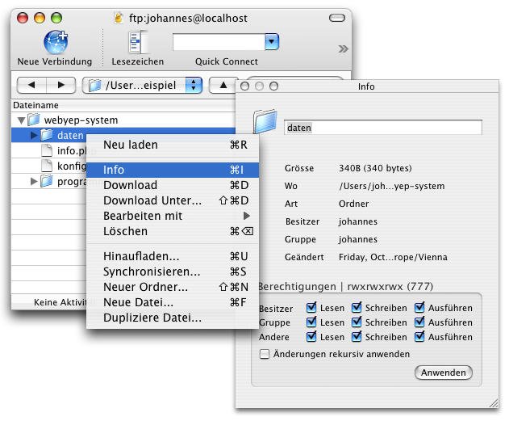
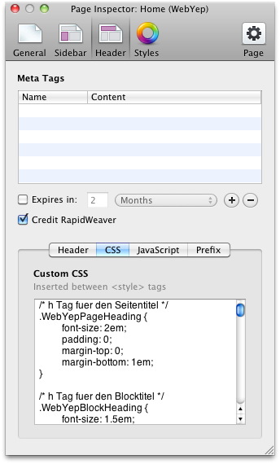

Sie können den WebYep Online Installer https://secure.obdev.at/WebYepInstaller/ verwenden, um den webyep-system Ordner auf Ihrem Webserver zu installieren.
Das Paket, in dem das WebYep RapidWeaver Plugin (WebYep.rwplugin) enthalten war, enthielt auch den Ordner webyep-system.
Um WebYep am Webserver zu installieren, laden Sie diesen webyep-system Ordner in das Stammverzeichnis Ihrer Web Site (wo auch die Homepage, index.html, liegt) – üblicherweise mittels FTP.
Um WebYep einzurichten, müssen die Zugriffsrechte das "daten" Ordners innerhalb des webyep-system Ordners am Server entsprechend gesetzt werden. Es müssen Schreib-, Lese- und Ausführungsrechte für alle (Besitzer, Gruppe und Andere) gesetzt werden – dies entspricht dem Unix Modus "777".
Hier als Beispiel die Vorgehensweise bei Verwendung des Programms "CyberDuck" zum FTP Transfer:
Klicken Sie sich zum "daten" Ordner im webyep-system Ordner durch. Klicken Sie diesen dann mit der rechten Maustaste an (bzw. bei gehaltener Strg Taste) und wählen Sie aus dem erscheinenden Menü "Info".
Im erscheinenden Fenster können Sie nun die Zugriffsrechte setzen – klicken Sie danach auf "Anwenden":

Bitte lesen Sie auch die WebYep Dokumentation zum Thema Installation und Einrichtung am Server. Im besondern bezüglich etwaiger Sicherheitsbedenken wegen der Zugriffsrechte!
Der webyep-system Ordner enthält eine Datei namens konfiguration.php. Öffnen Sie diese Datei in einem Text Editor (wie TextEdit.app). Passen Sie folgende Zeilen Ihren Bedürfnissen an:
Der Benutzername für den Zugriff auf die WebYep Inhalte mittels Web-Browser:
$webyep_sAdminName = "admin";
Das Kennwort für den Zugriff auf die WebYep Inhalte mittels Web-Browser:
$webyep_sAdminPassword = "";
Die Zeichenkodierung (encoding), die in der WebYep Seite verwendet wird:
$webyep_sCharset = "utf-8";
RapidWeaver verwendet für Seiten üblicherweise die utf-8 Kodierung, daher können Sie diese Einstellung auch auf "utf-8" belassen.
Nachdem Sie diese Änderungen an der Datei konfiguration.php vorgenommen haben. müssen Sie diese Datei erneut auf den Server hochladen!
Bitte schlagen Sie in der WebYep Dokumentation für nähere Detail zu den Konfigurationseinstellungen nach.
WebYep unterstützt die verbreiteten in-browser HTML-Editoren "TinyMCE" und "CKeditor". Sie werden nicht vorinstalliert, sondern können von der entsprechenden Website heruntergeladen werden und durch einfaches Hochladen in den "opt" Unterordner des webyep-system/programm Verzeichnisses installiert werden. WebYep erkennt dann automatisch die Präsenz des Editors und verwendet ihn zum Editieren des Fließtextes.
Weitere Informationen zur Installation eines dieser HTML-Editoren finden Sie in der Referenz zum HTML-Text-Element der WebYep Online-Dokumentation.
Das WebYep Bild-Element (wie auch das Galerie-Element) unterstützt die verbreitete JavaScript-Effekt-Bibliotheken "Lightbox" (basierend auf Prototype/Scriptaculous) und "FancyBox" (basierend auf jQuery). Wenn Sie eine dieser Bibliothek herunterladen und im "opt"-Ordner von WebYep installieren, wird das Bild-Element automatisch diese Bibliothek verwenden. Anstatt ein Popup-Fenster zu öffnen, wenn auf ein Vorschaubild geklickt wird, wird WebYep dann das Originalbild direkt in der Seite mit einem Lightbox-Effekt anzeigen.
Weitere Informationen zur Installation eines dieses Lightbox-Effekts finden Sie in der Referenz zum Bild-Element der WebYep Online-Dokumentation.
Sie können das Aussehen aller Elemente einer WebYep Seite definieren, indem Sie entsprechende CSS Stile für die Seite definieren. Jedes WebYep Element hat seine eigenen CSS-Klassen. Beim Anlegen einer neuen WebYep-Seite wird ein Beispiel-CSS-Code in das "Custom CSS"-Feld der Seite kopiert. Verwenden Sie den Seiteninspektor (Page Inspector) - "Header"-Reiter - um diesen CSS-Code zu verändern:

In der WebYep Dokumentation finden Sie weitere Details zu den WebYep Elementen und ihren CSS Klassen.
Sie können den WebYep Anmeldeknopf auch in jeder "Formatierter Text" Seite bzw. in einer Seitenleiste manuell platzieren.
Geben Sie dazu folgendes Code Fragment ein:
<?php webyep_logonButton(true); // WebYepV1 ?>
Um den Anmeldeknopf unsichtbar zu machen, geben Sie statt true einfach false an.
Wichtig: Sie müssen dabei sicherstellen, dass die betreffende Seite ".php" als Dateinamenserweiterung ausweist und dass sie den gleichen Seiten-Präfix Code enthält wie WebYep Seiten. Kopieren Sie den Seiten-Präfix Code einer WebYep Seite im Seiten-Informationsfenster, "Code"-Tab aus dem "Seiten-Präfix"-Feld.
Hinweis: Der Anmeldeknopf wird in der Voransicht von RapidWeaver nicht sichtbar sein. Veröffentlichen Sie die Seite (spielen Sie sie auf den Server) und öffnen sie dann mit dem Web-Browser.
In der WebYep Dokumentation finden Sie weitere Details zu den PHP Code Fragmenten aller WebYep Elemente.
Die WebYep Dokumentation enthält detaillierte Informationen zu jedem WebYep Element, zu Installation und Backup (auch technische Details bzgl. PHP) und mehr. Sie kann auf der Objective Development Web Site heruntergeladen oder online gelesen werden.
In jedem WebYep Editor Fenster im Web-Browser finden Sie ein Fragezeichen um unteren linken Rand – ein Klick darauf öffnet die Online Hilfe zum jeweiligen Editor.
© 2011, Objective Development Software GmbH, http://www.obdev.at